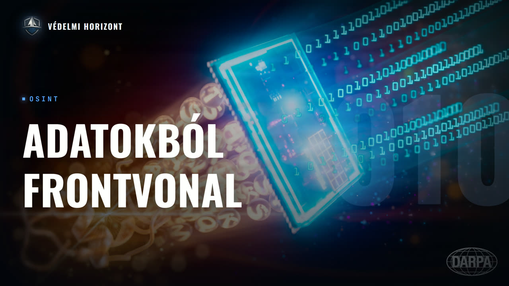

VÉDELMI HORIZONT #010 – OSINT: így olvasható ki a frontvonal a műholdadatokból

Leírás
Résztvevők: Zsebeházy Bálint, Lázár Zsolt
Üdvözöljük a Védelmi Horizont kutatóműhely tizedik adásában!
Ebben az adásban Lázár Zsolt OSINT szakértő a vendégünk, akinek pályája a repülőgép-szereléstől a nemzetközi üzleten és az informatikán át vezetett a nyílt forrású, adatvezérelt védelmi elemzésig. Mit jelent a gyakorlatban, ha valaki nem híreket olvas, hanem adatokból dolgozik? Hogyan rajzolható ki a frontvonal a NASA hőanomália- és éjszakai fény-műholdadataiból, és hogyan mutatja meg egy változásmérő műhold közel utcára pontosan, melyik épület rombolódott le? Szó esik arról, hol húzódik az OSINT és a puszta spekuláció határa, miért a legkevésbé megbízható forrás a közösségi média, és mit árul el egy geolokált fotó, például a sokat vitatott Zelenszkij-felvétel, a valódi helyzetről. Vendégünk őszintén beszél a kvantitatív elemzés korlátairól és saját tévedéséről is, amikor a veszteségi adatokból vont le elhamarkodott következtetést, figyelmen kívül hagyva az orosz hadsereg hidegháborús tartalékait. Végigvesszük, hol ad valódi többletet a gépi tanulás és a nagy nyelvi modellek, miben más a low-tech és a high-tech eszközök logikája az F-35-től az olcsó, 3D-nyomtatott drónokig, és hogyan érdemes egy kis országnak az európai védelmi kiadásokhoz viszonyulnia. Vajon felmenő vagy éppen elhaló ágon van-e az OSINT, ha a felek elkezdenek védekezni ellene?
Leirat beszélőnként
Üdv mindenkinek, ez itt a Védelmi Horizont, az a podcast, ahol gazdasági, hadiipari és biztonságpolitikai szempontok alapján nézünk rá ugyanarra a témára, egyszerre, egyasztalnál. A nevem Zsebeházi Bálint, és most ketten ülünk a mikrofonok mögött. Velem szemben Lázár Zsolt, oszinszakértő.
Köszönöm a meghívást, sziasztok!
Köszönjük mi is, hogy elfogadtad a meghívásunkat. A mai adásban az OSINT-os, az Open Source Intelligence-ös szakmai életútról fogunk beszélgetni abban, hogy pontosan mit is jelent ez, hogyan válik az ember OSINT szakértővé, és mit jelentenek az adatok meg úgy általánosságvégvel a data science, a hadiparban, illetve az ezzel kapcsolatos foglalkozásnál. És akkor kezdjük is az első kérdésemmel. Sok mindent találtam a életutadról, vagy így szemezgetve többen oldalról, meg így mindenhonnan. Ugye ilyen nemzetközi üzlettel is foglalkoztál, védelmi és biztonságpolitikával, kutatásokkal. Mesélj kellek erről akkor, hogy hogyan is nézett ki a karriered. Igen, itt valójában nagyon... Meg hogy hogyan jut el valaki ide, hogy osintos lesz, úgymond.
Igen, ez nagyon hosszúnak tűnik, meg színesnek, de valójában ez szinte biztos volt, hogy ide fog kifutni. Igen, eredetileg még huszon pár éve repülőgészerelőnek tanultam, és akkor volt egy pillanat, amikor eldöntöttem, hogy újra képzem magam, és akkor így mentem nemzetközi üzleti kapcsolatokra. És mintán repülős volt a hátterem, ezért adta magát, hogy ha már nemzetközi üzleti kapcsolatok, akkor a Gripen szerződésből írtam a diplomamunkámat, ugye a vadászkép szerződésből Magyarországra. És miután már a Gripen egy svéd repülőgép volt, ezért a svédekhez mentem ki menedzsmentet tanulni. És az mind ilyen social science volt, tehát adta magát, hogy ebből elég, és akkor inkább átmegyek IT-ra, de akkor meg már elkezdtem publikálni hadi ipari területen, főleg európai védelmi iparral kapcsolatban. És akkor az IT terület viszont már belecsúszott abban az időszakban, amikor Covid volt, ami meg már közel volt az ukrán háborúhoz, és akkor az ukrán háború meg teljesen adta magát, hogy ha van egy IT-s vénzettségem, meg eddig is ilyen európai védelmi ipari kérdésekkel foglalkoztam, akkor Miért nem építek fel adatelemzési projekteket a háborúval kapcsolatban? Mert egyébként szintén mondom, hogy ezzel a háborúval kapcsolatban mi többet tudunk, mint egy átlag nyugati tábornok, mondjuk a II. világháborúban a háború is helyzetről, mert annyi adatunk van, és tényleg van adat, tehát nem kell olvasni híreket. Én mindig ezt is könyörgök, hogy ne olvasanak az emberek híreket, mert egyhogy csak bepánikoltatják őket, vagy épp az ellenkezőleg elaltatják A hírek a józanságukat, és sokkal jobb, hogyha adatokból dolgozik valaki. És akkor elkezdtem, mert most már négy éve, négyes fölével lassan fut ez a háború, elkezdtem nyílt forrás adatokból dolgozni. Meg nyilván kitérjünk arra, hogy ez pontosan mi. Viszont a hátterem ebbe futott ki, és ezt viszonylag ilyen értelemben visszatekintve teljesen egyenes út volt, még akkor is, hogyha valójában ne vannak tűntve lehet közbe, de hogy ebbe az irányba ment minden, és szerintem Nem is lehetett volna másképp csinálni nagyon, mert hogy annyira annyira sokrétű az ismeretanyag, ami ehhez kell, hogy ezt igazából egy helyről nem biztos, hogy össze lehet szedni. Tehát lehet, hogy a hosszabb út volt valójában rövidebb. Még akkor is, hogyha ezerszer buktam meg, meg nagyon sok mindent félreértelmeztem ennél között, de sokat lehet belőle tanulni, tehát igazából mindegyik ilyen bukás is arra megy ki, hogy ha kétféleképpen vagy tényleg megbuksz, és akkor nem volt értelme, vagy tanulsz belőle, és ha tanulsz belőle az ember, akkor azért ennek volt értelme.
Amúgy az érdekes volt, hogy azt mondtad, hogy ne olvassanak híreket, hanem inkább az adatokra figyeljenek. De pontosan mire gondolsz, hogy olvassák a Szipri-nek Mindy Name-be kijött tanulmányait, vagy csinálják, nem tudom, a Github-os publikációidat, töltsék le maguknak.
Nem is az egész, de van egy csomó más. Na igen, egy lépés, menjünk vissza. Tehát ugye a SZIPRI is mit csinál? A SZIPRI is azt csinálja, hogy nyílt forrásból begerebézi az összes információt, hogy milyen fegyveraladások, milyen védelmi kiadások voltak, és abból készítenek egy adatbázist, ami lementhető, meg készítenek egy kiadványt időközönként. Igen, ez fizetős, igen, tehát az nem annyira egészséges, de a fönnvalóan ilyes adat tehát le lehet tölteni. De ami a HPRO-val kapcsolatos és sokkal jobb információforrás, az rengeteg műhatatatunk van, és akkor mondjak egy párat, Amiket lehet elemezni, ugye a legegyszerűbb, és mindig ezzel érdemes kezdeni, amihez nem kell mélységi, ilyen elemzői gondolkozás. A NASA-nak van egy nagyon jó, az egész Földet szinte átfogó műval rendszerre, amelyik a tűzes eseteket hivatott dokumentálni, tehát ilyen hőmérsékleti anomáliákat detektál. Egyébként ez szinte real time, tehát valós idejű. Észak-Amerikában teljesen az, ezen az európai térségben ez nem teljesen vahós idejű, viszont mégis több, mint a semmi. És akkor ebből sok mindent lehet látni, lehet látni a tűz eseteket Ukrajnában, ebben nagyon sok lesz a false pozitív, tehát a mezőgazdasági tevékenység is be fog jelezni, meg szóval nagyon sok mindent be fog jelezni, attól függetlenül, hogy nem egy kilőtt harckocsi, vagy bármilyen esély, tehát kell egy szerencsefaktor is hozzá, de Ha aggregáljuk az adatokat, és ezt meg lehet csinálni közvetlenül a NASA weboldalán, ha aggregáljuk az adatokat 3 hétre, akkor egész jól kirajzolja a frontvonalat. Tehát ilyen 20 km-es mélységben lehet látni, hogy körülbelül hol van a frontvonal. Ugye a frontvonal eleve nem egy vonal, hanem van egy mélysége. Tehát azt viszonylag jól lehet dokumentálni, tehát nem kell olvasni a gyereket, anélkül is lehet tudni, hogy hol van a fontvonal, és hogyha lementjük az adatokat, vele lehet menteni a saját, nekem is van hozzá a scriptem, meg egyébként mások is fejlesztettek hozzá, tehát le lehet menteni a nyers adatokat. Azt idővonalasan, ha valaki végigpörgeti egy térképen, akkor nagyon jól lehet látni, hogy a fontvonal mozog. Márhogy ebből a hőmérséklen anomália térképből, Úgyhogy ebből is lehet tudni, hogy Oroszország nem halad a háborúval, tehát nem kell azt most... De egyébként amíg is felestek, és azt nézni, hogy most én sem tudom, melyik település éppen... Be se tudnám mutatni a település helyét Ukrajnába, hogy hol van, meg az emberek 99,9%-a nem tudja, hogy melyik település hol van Ukrajnában. Mégis úgy van bejelentve mindig, hogy ó, már bevették ezt a települést is, és mekkora siker, közben van nem tudom én hány ezer település, hány ezer, sokkal több település Ukrajnában, tehát nem kell ezzel foglalkozni szerintem. Nagyjából a legtöbb település, amit bevesznek mostanában, az ilyen egy tucattól pár száz hősig, tehát nem lakik mehagy senki, nincsen jelentősége. Azt is lehet tudni nyílt forrásból, hogy naponta olyan 6-7 négyzetkilométert foglal nektek az oroszok, de mondanak, hogy az ukránok visszafoglalnak 30-at, tehát nem halad annyit a front, hogy ennek lenne jelentősége. Úgyhogy nincs értelme olvasni. Persze van értelme olvasni, mert ez egy megerősítősi pont, Meg biztos nagyon sok extra információt letölthető belőle, de valójában a XXI. században, amire van az adat, inkább az adatokat érdemes böngészni. Mondok egy másikat, ami érdekes lehet, meg valójában sokkal jobb forrás, ugye rombolásadatokat sem Nem onnan tudjuk, hogy melyik épület lerombolva, mert van róla egy műhold felvételünk és olyan egy fotónk, hanem van olyan műholdrendszer szintén a Föld körül, ami nem közvetlenül magasságadatokat mér, hanem ilyen magasság- meg térbeli változásokat, így leszkenneli a Földet bizonyos időközönként, és akkor ezekből össze lehet rakni egy olyan adatfolyamat, ami meg azt mutatja meg, hogy hol volt valamilyen területváltozás. Nyilván ha emberi, akkor ember által okozott, és hát Ukrániában nagyon jól látni, hogy szinte Utca-ház számpontossággal meg lehet mondani, melyik épület lett lerombolva pont ebből az adatfolyamból, de ezt mondom, ez nem egy felvét, ez nem egy fotó, hanem egy ilyen változásmérő műholdnak a lidar-szerű dolog, és az az adatfolyam is letölthető. Van róla szintén, szóval itt a GitHub, van a GitHub-on hozzá kód használható, teljesen jól letölthető. Hú, és akkor hosszúra nyúlik a válaszom, de hogy egyébként mindezekből összerakható egy olyan elemzési út és elemzési rendszer, ami meg szövegesen is megfogalmazza, hogy éppen mi történik egy adott időszakban. Ilyen projektet is csináltam, tehát van egy olyan projektem szintén GitHub-on, ami Ami minden nap letölt szinte minden adatot, és akkor azt egy elemzési módszert annál átfuttatva megírja, megfogalmazza szövegesen, hogy ezek a települések lettek elfoglalva ezen a napon, ennyit haladt az orosz hadsereg ezekben a megyékben, ez és ez történt, ilyen veszteségek voltak, stb. Ezt meg lehet csinálni hírolvasás nélkül is, pusztán adhat a lapon, tehát ezt megírja, és ebben nincsen AI, tehát még alatt itt valaki bepánikolt, szokott lenni, de az AI halucinál, ebben nincsen AI, tehát ezt nem AI írja, hanem a kódot azt AI írta persze, meg én kódoltam, de hogy alapvetően nem AI írja, hanem egy kód írja meg, és ha át van futatva egy AI léjjelen, akkor persze szépen meg legyen szírve, de a nyers szöveg is teljesen jól értelmezhető. Nem kell olvasni híreket. És az a fejemre lesz olvasni majd, hogy én javaslatom, hogy ne olvasanak az emberek híreket, de hogy tényleg ne. Tehát, hogy ameddig lesz nagy változás, meg elindul a front, akkor nyilván lesz róla ilyen headline, hogy már bevették Kievet, meg nem tudom, tehát az majd egy algodalomban okozható dolog lesz. Amikor ennyire áll a front, akkor felesleg is azon pánikolni, hogy ilyen huszadrangú települést meg egy fasort bevett az orosz hadsereg, meg nem tudom, átkeltek egy csatornán. Tehát egyébként a kódom azt is megmondja, hogy melyik csatornán keltek át és melyik idón. Tehát, hogy ezek mind lekódolhatók. Egyébként most pont ez a projekt úgy működik, hogy nyilván le lehet tölteni a teljes térképét Ukrajnának. Ez egy OpenStreetMaps térkép. És akkor a saját kódom annyit csinál, hogy azokat az adatokat, amiket letöltök műholdagból, hasonlítgatja ez a térkép adatforráshoz, és akkor megmondja, hogy ha volt egy területváltozás adott helyen, és mondjuk ott volt egy csatorna vagy egy folyó, most pont ilyen nem mutatódóbb időben, de egy csatorna, amin át kellett haladniuk, és ott volt egy híd vagy felüljáró, akkor azt ismeri ebből a térképből, és megírja a kód, hogy miután itt volt ez a felüljáró, valószínűleg ezen mentek át a csapatok. Szóval ilyeneket meg lehet írni, automatikusan nem kell hozzá írt olvas És ez mindenkinek úgymond a kezelődjébe kerülhet, és ott van, míg mondjuk a hírek, meg nagyon sok, én láttam, amikor még követtem, rengeteg tortítás van benne. Ugye mondok egy teljesen egzakt példát, ezt abszolút osint. És ez nem tortítás, hanem a különböző interpretáció jön ennek az eseménynek. Ugye mindenki emlékszik arra, hogy Egy orosz ország bejelentette, hogy bevette ezt és ezt a települést, és hogy ez már nem ukrán kézen van, és akkor oda ment Zelenszkij ebbe a településre, csinált mára alul egy fotót a településnek egyébként már a közigazdasági határán belül, de hogy ez azt szimplizálta, hogy nincsen bevéve ez a település, hogy én itt vagyok, ha-hó, ez még mindig ukrán kézen van, sőt, mi verünk éppen kititeket. És akkor ment egy csomó napig, emlékszem rá, hogy ott ment a találgatás, hogy ez most tényleg ott készült-e, tényleg akkor készült-e, meg nem tudod, ment ez az izé, És közben valójában nagyon egyszerű volt, mert az a félvétel, amit Zelenszkij nyilvánosra hozott, az vissza lehetett geolokálni, hogy hol készült. Egyszerűen egy benzinkút volt a háttérben, meg kellett nézni, hogy az a település, egyébként nem sok bevezetőút van, legtöbbször a bevezetőútoknak a főútvonalon annyi szokott lenni egy benzinkút, akkor fel kellett menni ugye nyilván Google Earth térképekre, meg kellett nézni, hogy hol van bevezetőút, hol van a benzinkút, és akkor megtaláltam a benzinkútot, persze, hogy melyik benzinkút volt az. Akkor onnan, abban a benzinkútból, abban a szögből lehetett látni két toronyházat, ha jól emlékszem, az látható-e abban a szögből? Igen, látható volt. És akkor már csak az volt a kérdés, hogy oké, ez ott készült, de hogy készülhetett-e akkor, amikor Zelenszkij mondta, hogy akkor készült, és akkor viszonylag egyszerű volt szintén, mert ugye egy iPhone, egy új iPhone volt a kezéből, vagy valami máshogy, tehát az nem jöhetett ki évekkel ezelőtt, mert ez egy új iPhone volt. És az időjárási adatok alapján felfest volt az ég, ha jól emlékszem, és akkor pont felfest volt az ég, amikor mondta, tehát az Olszang akkor készült. Tehát, hogy vissza lehet csomó indent követni, tehát bizonyítható egy csomó információ, és felesleges emiatt azokra az ilyen, hogy hívják, ilyen catchy headline-okra, tehát csak az olvasók bevonására kitalált headline-okra alapozni, hogy emlékszem, hogy ilyen is volt, hogy kitört a III. világháború, meg nem tudom,
Igen, most nagyon belementünk a sűrűjébe, kicsit a végébe is, ahova majd ki szeretnék lyukadni, de talán még a legeslegelején egyébként így tisztázzuk a fogalmat, hogy mi az az osint, mert ezt én nem hiszem, hogy egy ilyen széleskörűen elterjedt fogalom, mint az alma, hogy mindenki megtanulja a vadába, és akkor...
Igen, én először, évek kezdődött, nem tudom, 6 évet láttam ezt először, amikor pont a CIPRI keresett olyan embert, aki Osinba járt, és akkor én mondtam, hogy mi ez? Tehát így nem tudom, én sem tudtam. De hogy egyébként az azt jelenti, hogy nyílt forrású hírszerzés, ugye minden, ami nyíltan hozzá lehet férni, az a kategória. Tehát mondjuk legklasztikusabb social media posztok, az egyiket a legkevésbé megbízható, de hogy egyébként a social media posztok is, ha valaki óriási mennyiségben lementi őket, meg elemzi, az klasszikusnak egy ilyen OSINT-os feladat, de a geolokált információk begyűjtése, műadatoknak a letöltése, elemzése, az mind OSINT, meg hát OSINT az is, hogyha valaki mondjuk, ez is klasszikus, hogy Akademik, tehát ilyen szakmai újságoknak, félvezetőknek azt így kell, hogy alapján próbálja összerakni egy képet, és a Quantum kielemez 5-6 olyan szakciket, ami egy adott témával foglalkozik, és abból le van egy következtetés. OSINT, határterület, mert hogy ebből mennyi a saját munkának, Az ellenzésnek az ellenzése, ugye ez ilyen agregálás, az egy kérdés, de hogy egyébként ez is klasszikus osint. De hogy magamnak ellent mondjak rögtön, a híreknek a leszkrépelése is klasszikus osint dolog. Csak nem feltétlenül az elhívése a híreknek, hanem a feldolgozása. Mondjuk, hogy milyen irányba torzít egy-egy sajtóorganum, vagy az is klasszikus osint például, hogy megnézni YouTube videókból, hogy egy adott közszereplő mondjuk egy adott témában milyen irányba mozdul. Pro NATO vagy Anti NATO, vagy az Egyesült Államok, akár Európai Unióval, Magyarországgal kapcsolatban milyen véleményt fogalmaz meg, tehát ezt mind lehet így súlyozni, van rá applikáció, csak az adatokat kell leszedni hozzá, tehát át lehet futtatni, klasszikus OSIN dolog. Meg hát az volt olyan projektem is, azt is ezerszer elmondom, hogy ne olvasson senki kommenteket semmi alatt, tehát ez csak az embervérnyomását növeli. Én például egy darab kommentet nem olvasok el, ennek ellenére tudom, hogy mi van a komment mezőkben, úgyhogy egy darabot sem olvasok el, viszont több százezer Mert van rá angolikusom, amely a lavasra helyettem, és agregálva tudom, hogy mi folyik, tehát hogy pont a választások kapcsán, tehát tudom, hogy mi folyik, megláttam, de hogy nem kell, tehát hogy egyébként mennyiségekbe gondolkozzon, aki Osinttal akar foglalkozni, és hogy a mennyiségeknek a feldolgozásában arra kell olyan Ilyen analytical pipeline-okat, tehát elemzési folyamatokat kidolgozni, amivel ki lehet nyerni információt a nagyon nagy zajból. Ezt például egy tipikusan OSINT-os feladat. Minden ami nyílt forrás. Egyébként van is egy mondás erre, hogy, ezt nem én mondom, ezt egy ismerő sem mesélte, de igaz egyébként, hogy a dolgok 90%-a nyílt forrásból megismerhető, a maradék 10% meg nem írja meg a kockázatot. Tehát, hogy körülbelül ez a hozzáállás, és ez tényleg így van, mert el lehet menni Ukrajnába megnézni a kilőlt harcocsikat, én kimentem egyébként, voltam Uk De hogy az a kockázat nem éri meg egyébként azt, hogy a 90% az információknak nyuhatakról is begyűjthető.
És hogy érted azt a... vagy nekem most eszembe jutott egy dilemma azzal kapcsolatban, hogy igen, mondjuk, hogyha nem olvasok újságot, vagy nem egy CSIS-nek vagy IASZ-nek az elemzését hallgatom meg egy témáról, hanem ténylegesen akkor így a Adatokhoz nyúlok akkor elsőkézből, hogy abban nyilván, hogyha nem olvasom el ezeket a híreket, akkor azt az emberi bájoszt úgymond így lefaragom, de az adatoknál is úgymond van egy bájosz, vagy egy előfordulhat. Ugye ezt statisztikából tudjuk, hogy nyilván ezek baromira tudnak szórni, az átlag, ezt már mindenki megtanulja a legelső statisztika óráján, hogy az átlag egy milyen rossz mutató tud lenni önmagában. Tehát hogy ezeket hogy érzed, hogy magát az adat megbízhatóságát hogyan tudod ilyenkor újra ellenőrizni? Vagy hogy igen, tehát hogy a kvantitatív elemzésnek is vannak ugyanilyen korlátai, mint a kvalitatívnak, csak talán nem annyira szembetűnő.
Igen, én nagyon kvantitatív vagyok, annakért nagyon sok kvalitatív munkám van, de én kvantitatív vagyok, de... Tehát igen, az egy túlpontos megállapítás, hogy vannak korlátai, és akkor mindenki egy pályáját, ami korlát, de ezekkel... Hát ahogy a kvalitatívval is együtt lehet élni sok korláttal, itt is együtt lehet vele élni mindenki egy klasszikusat. Én amit ilyen... Külbevésetnek gondolok, az mondjuk a térképadatok. Tehát ott egy utca ott lesz, ahol van. Tehát abban nem nagyon lesz szórás, tehát nem száz méterrel lesz aré meg ilyenek. Tehát az egy viszonylag fix dolog. És akkor innentől minden szór. Tehát az Ukrán példánál maradva, itt a NASA-nak a hőmérséklet adatai nem is, hogy csak szórni fognak, hanem kell egy bizonyos szerencsefaktor, hogy tényleg legyen egy adat arról, ami történik. Tehát ott kell lenni a műholdnak, nem szabad, hogy felhő legyen felőttel, nem szabad, hogy túl füstös legyen a terület, mert lakós helyzet, tehát itt van egy csomó minden. Ennek már lesz egy szórása. Akkor van egy, amit szintén használjuk, az éjszakai fényességei településnek, az is nál az a műhold adata, Ott is van egy szórás, egyébként a NASA azt viszonylag jól szűri, de akkor is lesz egy olyan szűk keresztmetszet, hogy nem mindig minden területen fotóz az a mi hold, be fog csillanni a hold, meg lesznek ilyen, nem csak a fényesség, tehát nem csak a város adott fényessége, nem mindenféle más, mondjuk ha hó van az adott területen, az is be fog csillanni, tehát hogy olyan fényességeket is fog mérni a mi hold, amik egyébként nem az épületeknek a világítása, tehát ez is egy szűk keresztmetszet, tehát ez is szórni fog. És mindjárt mondom, hogy mi a megoldás ezekre. Nyilván szórni fog egyébként a területet, Leszken elő, Myohad is, minden szórni fog. Leginkább egyébként ami szórni fog, és nem javaslom, hogy valaki azt, már lementeni érdekes, de hogy abból következtetéseket mondjon le, mondjuk az orosz haderőnek, a védelmi minisztériumának, amit kiadnak ilyen napi jelentések, hogy hány csatahajót, meg halálcsillagot lőttek ki aznap, tehát nem javaslom annak az elfogadását. Amiről van fotó, meg videós üzeneték, Azt el lehet fogadni, mint minimum ilyen alapvonal, annál csak több lehet, ugye a Horspotting csinál ilyet, be is háromszegelik a kilőtt toros szelméveket, az viszonylag fontos, az egy használatudat, de ott is csak a minimum mérték, tehát annak az fölfele szórhat, tehát ott lehet, hogy 15 ezer jármű van valójában, ha nem 35 ezer kilőtt, tehát ezt nyilván fölfele szórhat. Na de, hogy akkor ezek a limitálások, együtt lehet felelni, még mindig jobb, és még mindig ezerszer pontosabb forrás, mint egy II. világháborús tábornoknak, amennyit tudott a csatatérről. Tehát most, ha megkérdeznénk a II. világháborúban bárkit egyébként, hogy mit tudott arról, hogy mi folyik tőle 100 kilométerre, nyilván tudott, volt hírszerzési információja, meg ilyenek, de hogy ilyen mélységben, meg nem tudta volna megmondani, hogy a Kossuth-Lajos utca hat számon szétfele lőve, hogy nem. Azt meg tudjuk mondani. Tehát akkor tudta megmondani, hogyha volt ilyen hírigénye. De hogyha nem jelentette ezt az örök, hogyha szeretné ezt tudni, és nem jelentették neki ezt közvetlenül, akkor ő nem látott rá, de most erre így rálátunk közvetlenül, tehát hogy ezt tudjuk viszonylag pontosan. Tehát van egy szórás, de tudjuk. Ez egy gond, de hogy ezekkel mindegyütt lehet élni szerintem, és semmelyik nem Tehát hogy semmelyikben nincs olyan érzelmi bias, amire mondjuk azt gondolnánk, hogy most visszatérve erre a példán, hogy bele van keverve olyan dolog, hogy kitudod a világháború, vagy hogy jön az atombomba. Tehát hogy ezek nem telepednek ezek az adatokra rá. Le lehet vonni, és akkor mondok egy hibát. Én levontam egyszer egy olyan következtetést, ez tévedés volt, de sokat tanultam vele. Hogy milyen mennyiségek fogynak orosz meg ukráin oldalon, és akkor így ki lehetett ebből számolni jármű vesztességek. Ki lehetett számolni, hogy oké, azt tudjuk nyílt forrásból szintén, és letutalva itt az IISS-nek az anyagaira, hogy be vannak szám szerint, hogy mennyi jármű van oroszországban, meg mennyi jármű van És akkor egyszerű regresszionalizis, kivetítettem a jövőbe, hogy ha ennyi a vesztesség egy nap, akkor mi fog történni egy év múlva. És akkor az jött ki, hogy ilyen 50% felett lesznek a fogyások, tehát hogy egyszerűen felemésztik a hadseregek magukat. És akkor annyit mondtam ott, hogy engem mondjuk rá kényszerítene már egy ilyen fogyás arra a vesztesség, hogy akkor visszabonduljak, vagy leüljek egyáltalán tárgyalni. Viszont azt is mondtam akkor, hogy nem számolok az orosz depóknak a szinte végigáltatlan mennyiségű letárolt járműveiben, ezek a hidegháborús tartalékok. És akkor az derült ki, hogy hát Oroszország nem úgy nem ül letárgyalni, hanem a saját depóival elkezdte flújtani a járműveket. Több ezer harc kocsija volt akkor még. És akkor az alapkoncepció megdőlt, miután nem annyi jármű van már, hanem plusz még négyezer, mert teljesen meg Európa is beszállt, ugye elkezdtek szállítani az ukránoknak, tehát az ukrán számok is nem annyi van már, mint annyi Tehát ilyen szűk keresztmetsz van, meg lehet bias. Ugye benne volt a saját biasom abban az elemzésben, hogy a józan ész az már az én oldalamon arra menne ki, hogy akkor fejezzük be, ha ekkora a veszteség, de a józan ész az én oldalamon az egy bias volt. De valójában az élet másképp működik. De igen, hát ezek benne vannak.
Igen, ez érdekes egyébként. Én is így érzékeltem egyébként, hogy sok elemző mindig a saját racionálitásában, ahogy Max Weber is megírja, hogy ami nekem racionális, az neked, tehát hogy neki nem. És akkor lényegében a saját racionalitásomat ráhúzom a másikra, és akkor tök mást fog csinálni, mert nyilván mondjuk Putyin, aki a Szovjetunióban szocializálódott, nem pont úgy fog gondolkodni, mint egy amerikai elemző Washingtonban, vagy Berlinben egy német.
Igen, ezért csak egy az árvényezet, hogy én ezért a saját robotomat az úgy van beállítva, hogy semmi, tehát nincs benne semmi érzelem, semmi bias, az csak azt írja, amit lát, tehát azt majd mondja le az olvasó, hogy ő ebből milyen elemzés, tehát ott nincs elemzés benne, az csak a számokat meg a körítést teszi hozzá, de semmi olyasmi nincs benne, hogy akkor ebből ez következik, hogy annyi következhetés le van a robot, hogy az bele van téve egy ilyen algoritmus, hogy kiszámolja, hogy csak viccedve ér, hogy ebbe a tempóba Oroszország 120 év alatt fogja bevenni új sajn Ilyen nyelvű bevetítés, úgyhogy ez viszonylag érzelemmentes.
Egy részre szeretnék visszatérni kicsit, hogy már kétszer is mondta ezt a második világháborús hasonlatot, és tulajdonképpen ez mennyire változtatja meg egyébként a katonáknak a gondolkodását, hogy ennyire úgymond transzparenssé váltak a dolgok. Tehát nekem az is érdekes lehet ebben, hogy míg Nem tudom, 30-40 éve ez a technológia, meg a hasonló ilyen meglátások, meg következtetéslevonások csak mondjuk a szuperhatalmaknak vagy a nagyhatalmaknak volt a kiváltsága, hogy van elég erőforrás, hogy ezeket a technológiákat használják. De hogy napjainkra, ahogy már mondod, Mondjuk én leülök itt a laptopommal és oszintos open source forrásokból hasonló elemzéseket tudok megcsinálni, mint mondjuk az Egyesült Államoknak a 90-es években drónokkal, műhodakkal, óriási nagy... És ez ilyen szempontban egyébként mennyire változtatja meg, úgymond ezeket a hatalmi dinamikákat szerinted?
Remélem, hogy nagyon, és ugye mit értek alatta, ezt mindenféle, tehát az Osintot, nem csak a végkövetkeződésre, hanem magát a módszert, hanem mindenféleképpen használnia kell, nem minden magára valamit adó, Nem is csak azért, mert ők lényegesen jobb adatokat férnek hozzá, nem amiatt, hogy az OSINT felülírja esetleg a saját védelmi tervezést. Ez nem az a szint, tehát lényegesen jobb miuhadat vannak, katonai miuhadat, mint amikhez mi hozzáférünk. De. És akkor ez egy fontos de. Arra alkalmas, hogy 1. kiegészítse a védelmi tervezést, tehát azt legalább lássuk, hogy a másik oldalon mit lát, mert akkor minden oldalon használja, tehát valószínűleg ugyanazt fogják látni, mint mi, tehát ez fontos, hogy legyen egy ilyen ránátás. Mondok egy klasszikus példát, tehát azt mindenféleképpen érdemes tudni, hogy mondjuk hol volt rombolás egy adott területen, és ha nem kell hozzá, nem tudom én milyen NASA technológiában, de igen, kell csak, hogy az nyílt forrású, tehát nem kell hozzá extrém energiabelvitel, meg saját műhold, meg ilyesmi, akkor ezt olcsóbb megoldani így, mint saját műholdat gyártani erre a célra. Rögtön ellent is mondok magamnak, van pont egy olyan V4-es együttműködés, bár ez nincs így lefektetve, hogy ez egy V4-es, csak hogy a térségben egy együttműködés Ukrajnával is, hogy művodakat pont erre a célra Tehát, hogy lesz sokkal pontosabb adat is, mint amit ma a NASA-tól, meg az Európai Régi Ügynökségtől le lehet tölteni. De ugye ez is megint ilyen határeset, hogy az most nyílt forrású lesz-e, vagy nem. Ezt ugye pont a mai nap még nem tudom megmondani, de valószínűleg azért közelébben el fog döntni, hogy mennyire lesz az nyílt forrású. Ez, amiben mindenféleképpen változnia kell a gondolkozásmódnak, hogy be kell valahogy integrálni mint információforrást a döntéshozatalba. És abban az értelemben feltétlenül, hogy legalább azt lássa a döntéshozatal, hogy a másik oldal biztosan mit lát, mert azt ebből látjuk, hogy ha mi hozzáférünk ehhez nyíltan, akkor a másik oldal is, tehát ebből el lehet kezdeni gondolkodni. Egyébként önmagában is megáll, én azt abszolút vallom, hogy sokkal többet tudunk, mint egy II. világ Kápruls tábornok, tehát az a saját lábán is megáll, de nem építenék azért erre hadműveleteket. Tehát erre nem tervezést abban az értelemben, hogy csak ezen a lában álljon, azt azért kétszer meggondolnám, viszont hogy kiegészítse a tervezést, azt viszont feltétlenül gondolom, hogy erre szükség lesz.
Megemlítetted még, ugye, hát itt a gépi tanulás is szóba került egyébként már, csak nem így konkrétan kimondva, hogy például, hogy akkor megcsinálsz egy regressziót, és akkor azt kihúzod a jövőbe, talán ináris regressziót, és a vonalat egyszerűen kihúzom a jövőbe, hogy akkor mit látok, hogy mi van a vesztességekkel, illetve azt is mondtad, hogy te úgy tanítod be a gépedet bizonyos alkalmazásnál, hogy ne vonjon le konkrét következtetés, hanem csak elmondja a tényeket. És akkor itt lennék arra kíváncsi, hogy hogyan látod, hogy milyen, ugye sokan a gépi tanuláson azt mondom, hogy AI vagy MI, akkor mindenki az elemekre fog gondolni, ugye? De hogy akkor nézzük meg a másik oldalát is kicsit, hogy akkor hogy működik egy lináris regresszió, mondjuk egy sima általános gépi tanuló modell, de hogyan működik mondjuk egy elelem egy ilyen környezetben.
Igen, ugye itt rögtön két dolog van, hogy az elelem, igen mindenki mondjuk chat GPT-t használja, akkor az az első, amiben találkozik, hogy jaj, de jó szövegeket tud ez írni. Tehát az elelem innentől kezdve szerintem sokkal több embernek mond valamit, mint hogy, mindjárt mondok, hogy programozás oldalon ez mit jelent. Az elelemre én arra használom klasszikusan az elelemet, hogy egy már elkészített elemzést, ami adatalapú, tehát ilyen előre megkonstruált mondatszerkezetek, mondatok vannak benne, elelemen átfutatva sokkal szebb szövegeket fogok kapni. Nem fog változni semmilyen adat benne, tehát nem fog halucinálni, viszont szebben fogja megírni a szöveget, tehát erre tök jó. De adatok feldolgozására közvetlenül a chat GPT-t nem feltétlenül javaslom, viszont másra. Igen, és akkor itt jön az a része, amit viszont lehet, hogy sok ember nem használ, viszont ajánlom, hogy nagyon jól lehet vele programozni. És akkor mi az az AI dolog, ami valójában itt szerepet játszik? A legtöbb fejlesztői környezetben már beépül az AI, vagy így, vagy úgy. Tehát lehet úgy programozni, Bár nem javaslom, de lehet úgy is programozni valakinek, aki nulla programozási tudása, és mégis tud vele egyszerűbb kódokat írogatni, méghozzá úgy, hogy a fejlesztői közösségben megmondja ugyanannak a chat GP-tenek, vagy bármilyen más co-pilotnak, hogy mit szeretne elérni, és azt a chat GP-t, vagy bármilyen más agent, Nem szövegesen fogja neki megmondani, hanem egyszerűen megírja hozzá a kódot, ami meg fogja csinálni azt a feladatot, amit ő szeretne. Például ide egy ideális regresszionalizist, most ezt meg lehet csinálni Excelben is, meg nem tudom, tehát hogy lehet vele játszadozni, azt mondjuk végigolvasa valaki, hogy azt hogy kell megcsinálni, meg hány lépés, meg hova kell kattintani, ez mondjuk két nap, de hogyha le akarja valaki programozni, ezt is javaslom, hogy még akkor is, hogy senkinek ne mondják semmit, hogy Python, akkor is ezzel kezdje, hogy Pythonba szeretnék egy ilyen kódot írni. Akkor azt meg fogja írni ezt a kódot a fejlesztői környezetbe az adott agent, és azt már lehet futtatni utána, tehát sokkal hamarabb lesz eredmény belőle. Erre lehet használni, és mondok egy klasszikusan ilyen dologot, amit ugye mondtam ezt a Hőmérséklen anomáliákat, hogy ez milyen jól látszik, hogy hol van a front, de azt nem mondtam, hogy egyébként ez egy, hogyha csak rávetítjük, van adatunk arra vonatkozóan, hogy hol van a front a hírek szerint, mert nem a hírek szerint, hanem a nyílt forrású hírek szerint, tehát mindig le lehet scrape-elni sok-sok térképet, és akkor lesz egy csomó GPS koordinátánk, hogy hol van a frontonnal, hogyha ezt lescrape-eljük, plusz tudjuk, hogy hol vannak ezek a hőmérséklen anomália pontok, azt a kettőt összevetítjük, Akkor tudunk egy olyan kódot írni, ami mindig megnézi, hogy az adott frontvonalhoz képest, egy adott időpontban hol vannak ezek a hőmérsékleti anomáliák, és lesz belőle nagyon szép ábránk. Én a haranggörbének hívom, de már a kollégáim mondták, hogy az nem haranggörbe, de így egyszerűbb elképzelni, hogy a haranggörbének a csúcspontja az pont a frontvonalon van, és akkor ahhoz képest egyre kevesebb a hőmérsékleti anomália. Na, és hogyha is visszatérve a chat GPT-re, meg a tanulásra, Hogyha megtanítjuk egy rendszernek, hogy ezt a formát keresse egy adott területen, és abból fejtse vissza, hogy hol van a frontfonal, akkor nem kell tudnom a frontfonalnak soha többet, hogy hol van, mert ezt a formát keresve a hőmérsékleti normáljákban meg fogjuk találni, hogy hol van a frontfonal. És ezt például alkalmazzuk. Módszer, így leglehet találni a frontvonal pontos helyét, ez működik. Nem lesz tűpontos, de hát maga a frontvonal, mint egy említettem, sem egy vonal valójában, hanem egy mélységi terület, és arra viszont pont jó, hogy amikor elég hőmérsékleti anomália van, ez főleg ilyen nyarak, télen nem is nagyon van, tehát nem nagyon mozognak az oroszok se, de nyaranta meg tavasszal igen, és akkor amikor van elég pontunk, akkor ebből a tudásból, hogy ezt a görbét, ezt a nem harang görbét, de ahhoz hasonló görbét keresse a rendszer, akkor így Tanulás alapon már vissza lehet fejteni a fontfonat, anélkül is, hogy tudnánk, hogy hol van. Úgyhogy erre jó a ChangeGPT, azon kívül meg hát a különböző agentek, mert nem ChangeGPT-vel kell mindent csinálni, de hogy nem az ellenem része igazából ennek az érdekes, mert hogy beszélgetni nagyon jó vele, de akkor a beszélgetésnek legyen egy olyan kivenete, hogy kódoljunk, tehát kezdjünk el valódi profi munkát végezni vele, ne pedig csak beszélgessünk valamiről. Arra is jó, mert megtanítani nagyon sok mindent megtanít. Tehát ez megkerületetlen ma már. De valójában a kódolás az, ami szerintem a valódi ereje, és ha valaki tud kódolni... Én tanultam kódolni, tehát tudok, de nem azon a szinten, amiket csinálnak a chat GPT-től, az messze több alá, mint egyébként én egyetemen tanultam. Tehát nagyon ki tudja terjeszteni az embernek a tókörét. Tehát az alapokat elég tudni, bőven elég tudni az alapokat, és onnantól kezdett le csak a fantáziája az embernek, a mi határt szab, és erre valójában a chat GPT, vagy a kódex, meg minden más. Nem, Cloud meg ilyesmi. Tehát ez a lódi értelme szerintem, nem a szöveggenállás.
Akkor igazából az így kijelenthető, hogy egy informatikusnak egy úgymond egy ilyen force multiplier-ként működik a mesterséges intelligencia. Tehát hogyha az informatikus tudja, hogy ő milyen környezetben akarja, milyen nyelve, tudja minél hatékonyabban megoldani, igazából ilyen projektmenedzserként működik már kicsit, meg szerkesztőként úgy mondom.
Igen, klasszikus példa, hogy én ilyen adatmachinációkat meg adatfolyamokat tanultam egyetemen, ugye IT, és akkor elvileg ilyen bigdatákat tudok feldolgozni, meg ilyesmik, tehát ez nagyon hasznos, csak hogy ezt már nem kézzel csináljuk, de hogy valójában miután nekem az alapok megvannak, mondjuk egy olyan projekt, ami teljesen nem, tehát abszolút nem kapcsolódik ehhez egy ilyen GPS koordináták térképen való ábrázolása, vagy fontvonalak elemzése, ami messze más képességeket igényel, ráadásul itt ugye HTML-ben, meg egy csomó olyan kell kódolni, amit soha sem csináltam. Viszont utána tudom, hogy az alapok micsodák, mire kell építeni, ezért már ChatGPT-vel, meg Clouda, meg más eszközökkel, ugye nyilván kell a fejlesztői környezet. De hogy sokkal gyorsabban haladok, úgy egyébként, hogy ha meg kellene tanulnom, akkor miközben hónapok lenne, így meg napok alatt eljutok oda, ahova három hónap alatt jutnék el. És ugye megfordul az egész, tehát ez egy saját tapasztalat, hogy annyit hibázik minden éjjel, hogy az fog történni, ha valaki elkezdi használni, hogy sokkal gyorsabban meg fog tudni oda lenni a problémát a látszatra, De lesz benne sok hiba. És akkor valójában meg fog fordulni a munkafiamat, mert eddig az volt, hogy 90%-át a kódírásra tette ki, és 10%-ba hiválhatja bizottam, de most meg ugye az van, hogy 90%-a az időnek a hibajavításra megy el, és 10% megírni. Tehát addig el fog jutni, valami fog működni, de nem lesz tökéletes, de még így is rövidebb az idő, tehát hogy sokkal hamarabb lehet jutni egy kész termékig.
Akkor most kicsi témaváltás jönne, és akkor nézzük meg, hogy most sokat beszéltünk a frontvonalról, meg konkrét katonai hírszerzési alkalmazásokról, de hogy miben segíthet nekünk az OSINT az a védelmi ipar, fegyverkereskedelem, iparpolitikáknak az elemzésébe?
Ebben is van potenciál, meg ugye Az egésznek az a lényege, hogy ez ilyen dual use-nak is számít. Tehát ez nem kifejezetten katonai felhasználás, hanem ez civil felhasználás is. Annak egy klasszikus példa, hogy a nyilván osintos információkból lehet híreket csinálni, tehát egy média szolgáltatást erre föl lehet építeni, pont amiatt, mert nem elfogult, tehát lehet úgymond a sajtót ellátni információkkal. Tehát ez egy dual, klasszikus dual use technológia, ami egyébként célja az Európai Uniónak is most, hogy ezeket a fejlesztéseket támogassa. Nagyon nevünk maradva, tehát hogy a Az európai vélelem az valami elképesztően lemaradt. Ugye mondok egy távolabbi példát, hogyha látom azt, hogy az utcán kátyús az út, vagy szét van menve a csővezetékek, szétrohadtak, akkor nem kell hozzá sok ész, hogy csináljak egy útfelújító céget, vagy egy csőfektető céget. Tudom, hogy arra szükség lesz, tehát ez látható, tehát ugye 10 évvel ezelőtt is teljesen nevidens volt, hogy a hadi éparba érdemes lesz befektetni, mert annyira Keveset költötte az Európai Unió erre, hogy ha bármi történik, és most nem akármi történt, hanem ugye fontos, mert ez egy nagy háború a szomszédban, tehát hogy erre lehetett így készülni, hogy ebbe lesz úgymond tőke, és arra nem érdemes számítani, hogy azért érdemes az Európai Unió mozgását nézni, és nem a magánembereknek a mozgását, meg nagysziget mozgását, mert arra nem érdemes számítani, bármikor is a történelme, vagy majd a Nagy vállalatok rengeteg megtakarításából, amikor az Apple-nek mekkora mennyiségű, tehát az egy ország GDP-nek megfelelő mennyiségű készpénzállománya van, és mégsem költi el fejlesztésekre. Tehát még a saját eszközenek a fejlesztéseihez, hanem a közösségnek fontos fejlesztésekre. Tehát ugye erre nem érdemes számítani. Arra volt érdemes számítani, és én erre is számítottam már tíz évvel, írtam is erről könyvet, hogy az Európai Unió el fog kezdeni költeni erre a területre. És ez meg is történt, és ez lehet kérdés, hogy ez sok vagy kevés, meg hogy hitelből kell-e finanszírozni, vagy nem. Tehát ez egy nyilván másik vita, meg közkazdasági vita. De alapvetően ez az irány mindenféleképpen jó. Az OSINT-ebben úgy illeszkedik, mint dual use, és úgy illeszkedik, mint nagyon olcsón működthethető rendszer. Tehát én itt nem kell milliárdokat elkövetni vadászgépekre, meg ilyesmit. Tehát nulla forintból én az eredeti Projektemet, ami ez az elemző projekt, az kifejezetten úgy volt felépítve, hogy nulla forintból fusson, mert az volt az egyik ilyen tesztkövetelmény, hogy lehet-e ilyen harmadik világbeli állapotok között is futtatni valamit, vagy meddig lehet eljutni úgy, hogy ilyen harmadik világbeli tőke áll rendelkezésre, ami a nulla forint. És elég messzire el lehet jutni. Tehát nullaframe-ban lehet fejleszteni. Úgyhogy az Európai Uniónak az összes ilyen törekfését én támogatom. Azt nyilván meg kell vizsgálni egyenként ilyenkor, hogy épp egy beruházás vagy egy vásárlásnak mennyi az értelme. Tehát az most, hogy vegyünk négy csillagrombolót meg ilyeneket, tehát tényleg annak sem... Tehát, hogy a megjelen a költés mennyisége meglegyen, annak nincs értelme. De annak van értelme, hogy képességeket fejleszünk. És most nem arra gondolnak, hogy szükség van egy rakétás képessége, és akkor kell venni high-mast. Tehát most nem erre gondolnak, hanem az egy képesség, mondjuk, hogy a magyar honvédség képes legyen szinte bármilyen drónt legyártani. És akkor itt ugye nyilván fel kell építeni egy 3D-s nyomtatási képességet. De azt adatalapon is meg kell tudni oldani, hogy egy változás az könnyen és gyorsan végigfusson a teljes rendszeren, adaptív legyen, stb. Tehát ezeket a képességeket fel kell építeni. Ez egy szoftveres k És ez olcsóbb is, mint a vasak megvásárlása, és miután annyira gyorsan pörögnek az események Ukrajnába, meg ugye van most egy irányi dolog is, tehát rengeteg konfliktus van a világban, ezért a tanulási képesség is egy olyan képesség, amire ezeket a forrásokat be kell valahogy vonzani. Tehát az nem fog működni, És ez igazából nem is a magyar honvédséggel kapcsolatban szokott előjönni, hanem az ukránnal kapcsolatban, hogy szovjet mentalitással megyünk neki egy háborúnak. Tehát itt a humán erőforrást is fel kell odafejleszteni, hogy képes-e ilyen bizonyos típusú információkat befogadni. Feldolgozni, hasznosítani, meglegyen mögötte a hardware-es támogatás, és mondom, nem a harcosira gondolok, mert nem tudom, melyik vadászgépre, tehát én nem gondolom, hogy ez lenne a prioritás, mert annyira gyorsan változik, hogy nem tudunk 30 évvel előre gondolkodni, hanem azokra a kompetenciákra gondolok, amiket meg kell teremteni a háttérben, akár humán, akár szoftveres oldalon. És ehhez még nem kell sok pénz, de egyébként még vételmennyiségű pénzzel rendelkezésre. Úgyhogy én abszolút ebben optimista vagyok, én nem gondolom azt, hogy ebbe bele fog roskadni az Európai Unió, meg nem tudom, ez egy kötelező feladat. És igazából azt költik el, és ezt sokszor elmondom mindenhol, azt a pénzt költik el a vételenem politikára jelenleg, amit az elmúlt húsz évben kisporoltak be vele. Tehát egy filére több nem megy bele. Tehát ez szinte Magyarországon az ügynyi programnak a költés, azt én számoltam ki annak idején, írtam is volna publikációt, Hogy az pontosan annyi volt, mikor bejelentették, mint amit nem költöttek el az előtti tíz-tizenvalahány évben. Tehát az pont milliméterre kijött az annyi milliárd, amennyi a x százaléknyi költéshez lett volna szükség, és nem költötték el az előtti tíz évben. Itt nem plusz forrásokról van valójában szó, hanem az eddig el nem költött források elköltéséről. Most mondok egy példát, ez tipikus egyébként, sok országban volt ilyen, Magyarországon is, lementek ilyen 100% alá. És ugye mindenki, amikor egészségügyről van szó, hogy nem költünk az Európai Átlagnak megfelelő pénzt, ez teljesen igaz, és ez felháborít, hogy nem költünk ennek egész egészségügyre, meg az oktatás, az aztán pláne felháborít, mert az meg a jövőről szól. Viszont amikor arról van szó, hogy nulla egész vagy hány százalékot kötünk vélelemre, akkor meg senki nem rászta a ketrec ajtaját, hogy ne, de költsünk eleget vélelemre. Ez hiányozni fog. Ez ugyanígy vissza kell majd tenni. Vissza kell tenni most a pénzt az egészségügybe is, mert nem költöttünk rá X-et, hanem csak X minusz nem tudom én hány százalékot. Oktatás ugyanez. Tehát vissza kell tenni azt a pénzt. Ugyanezt történik a vélelmi közösokkal is, hogy nem költött az Európai Unióra. Ez nem Európai Uniós kérdés, de a tagállamok nem költöttek És most el kell kezdeni visszatenni azt a pénzt. Én csak abban vagyok így kicsit szkeptikus, vagy így feldeszem, mert nézem, hogy éppen miket veszünk, meg hogy mire megy ez a pénz el, de hogy erre a pénzre szükség van, az biztos. Legfeljebb nem azokra kell elkötelezni, amiket veszünk belőle, de nincs belőle. Valójában ez a pénz, azt mondom, csak a visszatelése az eddigi hiánynak. És nem fogják a magán. Tehát olyan nem lesz soha. Én még öt nem láttam valójában, hogy beletette volna valamelyik nagy high-tech cég a nem tudom mennyi milliárd dollárját, és akkor gyertek emberek, veszünk bőle nem tudom milyen képességeket, vagy itt felajánljuk erre a fejlesztésre. Ilyen nem lesz. Tehát, hogy nem finanszírozott meg az állam. És másik, ezt is sok helyen elmondom, azt ne várjuk, hogy a nagy fejlesztések kivérjenek a magánszektorból. Voltak ilyen, az inkább kivétel volt. Tehát volt néhány évtized, amikor a A legnagyobb fejlesztések kijöttek magán pénzekből. De az internettől kezdve az összes nagy ugrás az mind hadi iparba jött. Még egyébként az orvostudomány is hadi iparba jött. Már nem lett volna első világháború, akkor a sebészet nem tartaná ott, ahol tart. Tehát lehetett volna várni még kétszáz évet, ameddig a sebészet eljut odáig, hogy nem tudom én tudnak operálni olyan szinten, de az első világháború az előre lökte a sebészetet, nem tudom, kétszáz évvel. Vagy a társadalmi változásokról nem is beszélt. Tehát nők a bizonyos munkahelyek gyárakban, ha nincs II. világháború, akkor nem lények ott. Tehát egy csomó társadalmi folyamatot is a hadi ipar indít be, vagy a háborúk. Tehát, hogy most ez egy ilyen helyzet, ebből ugye két verzió van, vagy az elszemedői leszünk, és akkor elbukunk, tehát károkat szenvedünk el, Lerohad az infrastruktúra, vagy tanulunk belőle, és visszakanyarodkodom, ahogy előre tényleg mondtam, hogy lehet azt csinálni, hogy a maximumot kihozni ebből a konfliktusból, meg a lehetőségből, és az összes forrást arra fordítjuk, hogy oké, akkor most egy humántőkefejlesztés, kettő szoftveres háttér, és értelmes dolognak a megvásárlása, nem tudom, 200 darab harc kocsijé. Úgyhogy ez a feladat.
Igen, amúgy hú, nagyon sok mindent mondtál. De nagyon-nagyon értékes dolgokat. Nekem első körben az jutott még eszembe, hogy pont erre akartam egyébként rákérdezni, hogy mennyire talált hatékonynak ezeket a költéseket, mert amúgy bennem is ugyanezek merültek fel, hogy Gyakorlatilag most bevásároljuk, de hogy ezek is valamennyire elmaradott költések, mert nyilván harckocsik is kellenek, csak nem tudom, hogy ezek pontosan mennyire hatékonyak, főleg, hogy az ukrán fejleményeket látjuk. De közben az is igaz, hogy mondjuk a harckocsi leszerepelt Ukrajnába, de ugyanúgy egy Egy kontinentális hadseregnek még szüksége lesz rájuk. Tehát ezeket hogyan látod, ezeket a dilemmákat? Mondjuk, amúgy lehet, hogy most maradhatnánk a harckocsinál, mert az ilyen nagyon szemléltes, mert baromi drága, baromi lassú ahhoz képest, hogy sebezhető, de ugyanígy nekem még a Trump Class Battleship is eszembe jutott, hogy ez is nagyon-nagyon hasonló, hogy a legdrágább, a leghájtekebb olyan technológiák vannak benne, amik léteznek, és nagyon menő. És aranyból lesz kirakva, meg minden. De közben meg egy rakéta átáll, és akkor vége elsüllyedt, akkor nem tudom.
Igen, hát ez nagyon jó, ezt megkészítem. Az artkocsi is nagyon jó példa, de mondok egy másik példát. Tehát ez abszolút jó, hogy megáll a lábán, és akkor néhány lépést hagy tényleg vissza, mert ez nagyon jó, mindegyik nagyon jó. És a legszebb az, amit kommentett, hogy mindent tud egyszer, és egy hightech, és akkor a legkedvenc példám, F35-ös. Ugye mindent tud, és egy csúcs hightech, és nem tudom, Csak az, amit letöltesz róla adat egy repülés után, nem tudom, milyen hány terra. Tehát ugye ez tök jó, na de ugye a probléma az, hogy próbálják kiváltani vele például az A-10-es repülőgépet, és úgy nem sikerült. Tehát hogy most lesz meghozzá, mit fajolt volna az élettartalma megint az A-10-eseknek, pedig egyébként az egyik váltó típusa lett volna az F-35-ös. Na most az A-10-esnek az üzemeltetési költsége, Arra a feladatra, hogy ez egy légi támogatást nyújtó repülőgép, hogy arra a feladatra, amire fejlesztették, arra lényegesen alacsonyabb, mint egy F-35 ösé. Tehát, hogy ez a low-tech és high-tech kombinációja az, ami valójában szerintem a valódi útnak kéne lenni, és nem a csak high-tech és nem a csak low-tech. És akkor mondok erre egy sokkal személyesebb példát, amit mindenki tud. Sokat szólam a szegény epről, majd lassan szedünk tőlük ilyen feat, vagy annyiszor említem. Tehát az epről is se véletlenül csinálja azt, hogy van egy high-tech eszköze, mi telefonja, és kiad mellette egy SE telefont is. Mert ez emögött közgazdasági gondolkozás is van, meg egy hatékonysági gondolkozás is van, és hogyha ezt át tudjuk ültetni a hadseregeknek a gondolkozásába, hogy rendben van, Tudjuk, hogy a harckocsiknak a leghightech-ebb verziója kell ahhoz, hogy túléljen a frontvonal legalább két napot. Most ezt kicsit sakítok vele, de hogy nagyjából ezek a számok. De hogy mellette mennyiségeket is kell produkálni, ahhoz meg a low-tech eszközökre van szükség, mondjuk olyan olcsó drónokra, amiket lehet 3D nyomtatóba előállítani nagy mennyiségben. Tehát ezeknek a kombinációja lesz szerintem szükség, és az a haderő fog tudni gondolkozni, az a haderő fog tudni alkalmazkodni és a jövőbe gondolkozni, vagy arra tervezni, amelyik így tervezi meg a saját működését és a költéseit. Mert itt tud egyszerre mennyiségeket is és minőséget is előállítani. Mind a két egyéb szélsőséget, tehát a csak low-tech, meg a csak high-tech valójában bukásra lesz ítélve pontosan azért, mert ha valaki meg nem erre fektet és mind a kettőt tudja Felemészteni az szerintem nem jó megoldás. Ennek kéne lenni az iránynak, és nem tudom, hogy az EU, tehát ezt nem látom, még nem is lehet most még látni, hogy az EU mennyire akar ebbe az irányba elmenni. Vagy az európai tagállamok, hogy pontosan fogalmazzak. De azt látom, hogy az ukrán gondolkozás az ez. És hogyha mi az ukrán gondolkozásból szeretnénk tanulni, és javaslom, hogy abból tanuljunk, ne pedig a vesztes oldalból, akkor ezt érdemes lenne el is játítani. Reménykedem benne, hogy ebből akarunk tanulni majd. És nem pedig az lesz, amit egyébként évtizedeken keresztül volt, hogy meg kellene a legdrágábbat, meg kellene a legújabbat, még fejlesztéshoz adtáló eszközt kell megvenni. Tehát azt csinálják inkább a nagyországok. Tehát akinek van erre pénze, azt csinálja. Vegye meg a legfejlettebbet, vegye meg a saját fejlesztés által. De ne a kisországokkal fizetessék meg a saját fejlesztéseiket. Tehát az én nagyon ellen... Mint a jó Párt 2-es. Én nem akartam mondani. Tehát nem ivegyük meg azt, amit még ők sem vesznek meg. Lenne egy magyar termék, ami csúcs high-tech. Kibegyünk fel a nemzetközi piacra, az első kérdés, amit fel fog neki tenni, hogy oké, de a Magyar Honvédség megvette-e már? És ha azt mondjuk, hogy nem vette még meg, akkor nincs az ország, amelyik megvegye. Tehát, hogy ilyen nincs. Viszont mi Magyarország megcsináltuk azt, hogy még fejlesztés alatt álló lesz. Megvette? Nem vette, de mi megvesszük, és a fejlesztést is mi fizetjük. Tehát azt nem tudom garantálni, hogy ez egy rossz döntés, de hogy nem nagyon értem mögötte a gondolatot, lehet, hogy nem vagyok elég kész ideológianak, de hogy nehezen tudok mögé rakni egy érdemes érvelést, hogy miért mi fizetjük. Kis ország nagy országként, Németország lenneink, vagy az Egyesült Államok persze. De hogy ezt egy 10 milliós országnak miért kell kifizetnie, azt kevésbé értem.
Amúgy most ez nagyon rövid tisztázásképpen, de most a KF-51-es...
Vannak mások is ott. Vannak mások is. Helikopter vagyis volt ilyen.
De igen, ez elég. Amúgy ez érdekes, amit leírtál te is folyamat, hogy egyébként a bürokráciákban hogyan jelenik meg ez a golden plating, mint jelenség. Hogy akkor elkezdődik a kérés, hogy hát egy olyan eszköz kéne, ami 500 méterre ellő egy rakét, tehát az ennyi. Ennyit kérnek a katonák, aztán a végén mire, hát de akkor ott van egy hadnagy, akkor mondja, hát de jó lenne, hogyha még lenne benne egy lézeres célzórendszer, hát még jó lenne, hogyha lenne benne geolokáció, hát még jó lenne pár szenzor hozzá. És akkor így szépen lassan eljutunk oda, hogy ez lesz a hipercsúcs. Taktikai eszközünk, amiből eredetileg kellett, nem tudom, ezer darab ilyen rakétakilövő, de lett belőle egy. Vagy egy állami bürokrácia. Ez a modern bürokráciának a halál.
Ebben köte az van, hogy hogy működik a hadipar. Sőt, két dolog. Hogy működik a hadipar, meg hogy működik a politika. Ez egyes utalmakban legalábbis. F-35-ös, ugye meg lehet nézni, hogy melyik szenátornak melyik a körzete, és akkor mindenképpen kell valamilyen gyártás. Viszont nem tudsz, tehát egy repülőgépben X mennyiségű ganyagokat készíteni, nem X-szer millió. De hogy legyen benne még az ismerő, az ismerő, akkor az én körzetemben még lehet egy ilyen gyártás, olyan összeszerelést, stb. És akkor a repülőgép egy extrém módon kezd komplexé válni, az üzemeltetési költségek az egekben megy, és ugye, amit mondtál, Amennyi tisztnek az asztalán átmegy egy ilyen projekt, annyiszor le lesz menne több és több alkatrész. Na jó, igen, ez a végkeidő, de a háborús idő. Meg kell nézni, hogy hogy néztek ki a fenyverek bármelyik világháború vagy nagyobb konfliktus előtt, közben meg után. Azért leszoktak ezek áramban alasadni, Az ukráinai háborúban sem véletlenül az ilyen low-tech drónokkal kezdték el kilövöldözgetni az orosz harcosikat, amikor elfogyott a lőszer. Ennek van egy ilyen iránya, hogy rendben van, békédőben megtehetjük azt a luxust, hogy csak azért, hogy legyen még húszszal több állás ebben a körzeletben, meg legyen még egy cégnek munkahelye, azért még beleteszünk hat új alkatrészt. De konfliktus időben, meg hároms időszakban ez a bukás útja. Tehát ugye ezt nem lehet csinálni. Azt lehet ilyenkor csinálni, hogy a mennyiségek. És van még egy ilyen gondolat, és ezt nagyon szeretem, nagyon gondolító, nagyon szeretem ezt a gondolatot. Azt szokták mondani, hogy minden háborút a professzionális hadseregek kezdenek, de a végén civil haderők fejezik be. És ugye ebben nagyon sok minden van, hogy persze meghalnak a professzionális katonák, meg sorozni kell, meg minden. Ez a szörnyű része, de van benne egy olyan gondolat is, ami erre is igaz, hogy professzionalan is, meg ilyen csúcsra kihegyezett eszközökkel kezdünk egy háborút, de a végén mégiscsak az lesz, hogy ami éppen a kezünkbe kerül, és amit olcsóan tudunk gyártani megfelelő mennyiségben, az lesz a győztes. Tehát, hogy ezt még nem tartunk itt, meg szerencsére nem is fogunk valószínűleg, de hogy egy hadiipart nem lehet úgy felépíteni egy hatékonyt, fel lehet építeni egy amerikai hadiipart, persze csak high-tech eszközökre, de egy kis országra beszélek, nem lehet úgy felépíteni, hogy mi attól függjünk csak, hogy éppen a négymilliárd alkatrészből álló harc kocsihoz éppen lesz összeszerelési kapacitás, meg ilyenek. Tehát, hogy low-tech eszközök, nagy mennyiségben, olcsón. És nem látom az európai tagállamok, hogy ebbe az irányba gondolkozzanak. Azt látom, hogy infrastruktúrafejlesztést, meg nagyon sok amit szükségesben akarnak tenni ebbe a nagy csomagba, hogy el lehessen költeni, de ezt szeretném látni benne, hogy ebbe az irányba is elmozdulunk, hogy ilyen képességfejlesztés és olcsó eszközök tömeges gyártásra. És abban nyilván akkor nem lesz az, hogy minden tisztnek az asztalon, ahol átmegy, még beletehet négy alkatrészt, meg három képességet, hanem az lesz, hogy célreányos eszközöket kell gyártani. De hát meglátjuk.
Amúgy nekem ilyen szempontból egyébként talán kivétele az Egyesült Királyság. Tehát ott megjelent ez a gondolkodás, hogy ez a 40-40-20, tehát hogy Erről majd lesz egy nagyobb adásunk is talán, meg a DPI-ról, hogy az pontosan hogy alakult, meg egyébként mi van az Egyesült Királyságban most. De mostán így lassan már az 50-nedik perceknél tartunk. Nézzünk meg kicsi ilyen jövőbeli kitekintést, kilátások, hogy mi várható az OSINT-ban konkrétan, de hogyha szeretnél mást, vagy van még ilyen, akár ilyen az ukrán háborúval kapcsolatban, hogy te mit látsz, mint OSINT-os szakértő. Hogy hogyan fog alakulni akár a jövőben?
Először ugye a mikrolevel vagy mikroszint, az orosz-ukrán konfliktus, ott én már egy éve is azt gondoltam, hogy ez az OSINT dolog, ez egy ilyen elhaló dolog lesz hosszú távon, mert egész egyszerűen rá fogják magukat optimalizálni a felek arra, hogy ne lehessen használni. Vagy le lesznek tiltva ezek a mi holdok. Tehát millió gondolatom volt, hogy hogy lehet ezt leszűkíteni. Ugye miből fakadt ez? Abba, hogy a Google is kilőtte, már nem, de hogy egyébként a konfliktus kezdetén kilőtte a forgalmaadatokat, tehát nem lehetett használni. Csak időszakosan, ugye nyilván arra volt jó, hogy a civileknek, akik elhagyják a településeket, ne lehessen követni az útvonalokat, ne tudják az oroszok be háromszögen, hogy hol van a legtöbb autó, stb. Tehát ugye ez egy meglévő dolog volt. Tehát én arra számítottam, hogy ezt ki fogják terjeszteni más OSINT-os forrásokra is, hogy ne lehessen majd hozzájuk férni, vagy legyen torzítás bennük. De hát egyelőre nem tapasztalom ezt, hogy ez megtörtént volna. Tehát amit jósoltam volna két éve, az már nem jött be. Úgyhogy valószínű, hogy ez csak fejlődni fog. Az egy másik is, hogy milyen irányba Ugye most van a NASA-nak egy új műholdja, amit ilyen különböző gázokat mér. Még nem kezdtem el használni, tehát még én sem tudom, hogy mire lehet használni, de valamire biztos lehet majd győrre megmondani, mire lehetett. De hogy vannak mindig új műholdak, és tehát ezekből lehet megint dolgozni. Ugye van, amit nem scrapelek, de hozzáférhető is, ahogy egyre több adat van rajta, az a elhúnyt katonáknak az adatai. Ez is fönt van, de azt majd, hogy ha háborúnak vége lesz, akkor fogom csak lementeni, mert nem vagyok egy egyenleti okokból se. De az is egy végtelen adattár. Tehát én azt gondolom, hogy a OSINT-nak valójában jelen pillanatban csak felfele menő pályája van. Ami európai kitekintés és ugye itt a hadi-ipari költések, meg végtelen mennyiségű forrásán rendelkezésre, az ugye kevésbé látható. Amit tudunk belőle, hogy ugye elkezdődtek a nagy vasak beszerzése, meg mindenki elkezdett nagyon költekezni. Ezt tudjuk. Ha meglesznek ugye az éves jelentések, ugye mind az ISS-től, mind a CIPRIT-től, akik ezt monitoroznak, hogy milyen vásárlások voltak, meg mennyivel nőttek az államoknak Akkor abból lehet következtetéseket levonni. Én egy éve vagy másfél éve, amikor a Trumpék hatalomra kerültek, akkor volt egy nagy pánik Európában, azt láttam az arcokon, meg hogy nincsen Európai Védelmű, meg így, meg úgy. Tehát azokkor nagyon bepánikolt mindenki, elkezdték szórni a pénzt. Most kicsit én nyugodtabbnak látom a helyzetet, de lehet ilyen viharaletti csend is, nem tudom meggyorsulni ezt. Amit biztosan tudok mondani, és ez osintos forrás, hogy az oroszoknak a depói ki vannak ürülve, tehát hogy harcocsiaik már nemnyire vannak a depóban, de egyébként ettől függetlenül rengeteg harckecsők van, mert gyártanak már újakat. De egyébként a depóikat, a régi szovjet tartalékokat elég szépen leamortizálták. Most már nem mindegyik van kopra kiürítve, de a többsége az igen, azt látjuk műhódképekből. És nincs arról szó, hogy átvitték máshova. Igen, szoktam kapni, hogy persze, mert a föld alá elrejtették. Én akkor mindig megy, hogy a föld alá fognak előjönni, jó, csak a föld alá jönnének, tehát hogy nem látjuk ezt. Tehát nem azok azok ki vannak ülve. Annyi lehet, hogy esetleg így szétszórják őket meg ilyenek, mert nem azért, hogy megtévezték a műholdakat, hanem azért, hogy nyilván föl kelleket újítani, meg nem egy gyárba viszik el, ez lehet, de hogy valójában az a pár ezer artkocsi az eltűnt, hát neked nyilván roncsá lett. Úgyhogy ezek vannak. Rosszország oldalonáról én azt gondolom, hogy ott nyilván lesz egy ilyen ugyan olyan fejlődési ív, mint az ukránok. Nagy drónok egyre többet használják, vagy drónok egyre többet fogják használni, de a Frontline-nek nincs nyoma. Sőt, lassúnak. Úgyhogy igazából ez a száz év, amíg Ukránát beveszik, és még négy év ameddig a Dombászba tudják menni, körülbelül lehet, hogy három és fél, de ebben a tempóban ez nagyjából ennyi. Én ebben nem látok változást. Hát meglátjuk, hogy az európai tagállamok mennyire térnek észhez. Mert ahogy mondtam, ezt a Kátyus út, meg nem költünk ennek az oktatásra példákat, ez elmúlt húsz évben, ez igaz volt a honvédségre is, vagy minden tagállamnak a saját haderejére. Be kell tenni azt a pénzt, amit nem tettek be az elmúlt években. És kigonata volna, hogy a német hadsereg olyan állapotban van, hogy nem bírják mozgatni a járműveiket. Tehát, hogy ilyen, ez nem történhet meg. Lehet, most itt tartunk.
Lázár Zsolt volt a vendégünk, köszönjük szépen!
Én köszönöm neki most!
Ezzel a mai adás végéhez értünk. Köszönjük, hogy velünk tartottak! Ha hasznosnak találták az elhangzottakat, iratkozzanak fel a csatornánkra, kövessék a Védelmi Horozontot Spotify-on és a közösségi felületénken, és írják meg hozzászólásban, melyik témát dolgozzuk fel a következő adásokban. Minden héten új adást ajánlkozunk. Ha kérdésük, észrevételük vagy témajavaslatuk van, írjanak nekünk a védelmi.horizont.gmail.com címre. Védelmi Horizon nevében köszönjük a figyelmet és találkozunk a következő adásban.
A leirat gépi hangfelismeréssel készült, ezért tartalmazhat apró pontatlanságokat.